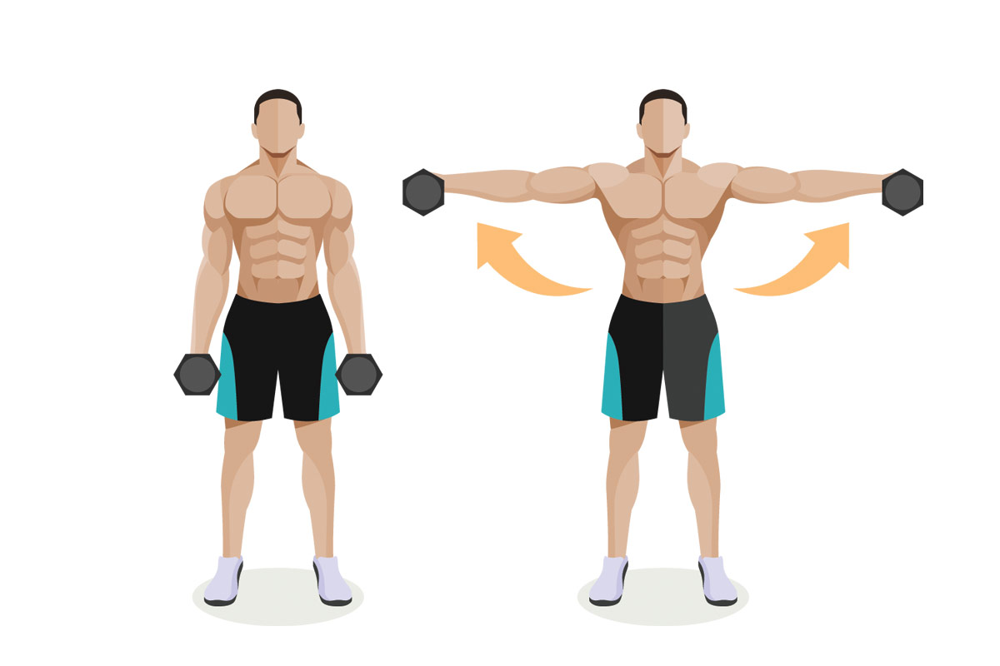

1. Отжимания от пола
Упражнение для разминки и подготовки грудных мышц к тренировке. Варьируйте различные типы и ширину постановки рук, а также используйте подставку под ноги для усложнения. 2-3 подхода по 12-15 повторений
2. Сведения на грудь
Упражнение выполняется со средним рабочим весом, контролем за техникой и полным ощущением вовлечения грудных мышц в работу. Старайтесь как можно сильнее напрячь и свести грудь внутрь, выставляя руки вперед — но не фиксируя при этом локти. 2-3 подхода по 12-15 повторений
3. Жим штанги лежа
Базовое упражнение для мышц груди. Может выполняться как со штангой, так и в тренажере для жима. При выполнении на горизонтальной скамье не поднимайте ноги вверх. Опционально каждую неделю можно варьировать наклон скамьи. 3-4 подхода по 7-10 повторений
4. Подъемы штанги на бицепс
Ключевое упражнение для развития мышц бицепса. При выполнении используйте средний вес, позволяющий выполнить до 15 повторов. Не раскачивайтесь при подъеме штанги и держите локти в одной и той же точке. 2-3 подхода по 12-15 повторений.
5. Концентрированный подъем на бицепс
Постоянно следите за тем, чтобы чувствовать работу бицепса. За счет легкого поворота гантели в работу включается внутренняя часть бицепса — при увеличении размера она выталкивает основную мышцу вверх, придавая ей объем. 2-3 подхода по 12-15 повторений
6. Приседания со штангой
Базовое упражнение для мышц ног. Может выполняться как со штангой, так и в тренажере для жима ногами. При выполнении держите пресс в осознанном напряжении, опускаясь до точки, в которой бедра параллельны полу. 3-4 подхода по 7-10 повторений.
7. Разгибания ног в тренажере
Упражнение для прицельной прокачки передней поверхности бедра. При выполнении также следите за тем, чтобы пресс оставался в осознанном напряжении. Не помогайте себе поднимать вес за счет выгибания корпуса. Может быть заменено на другое упражнение на ноги. 2-3 подхода по 12-15 повторений
8. Выпады
Упражнение для проработки средней ягодичной мышцы. Допустимо выполнение как с весом тела, так и с гантелями. Опционально могут быть заменены на любое другое упражнение для ягодиц. 2-3 подхода по 12-15 повторений
9. Обратные отжимания на скамье
Упражнение для разминки верхней части тела и подготовки суставов к работе. Может выполняться как от земли, так и на двух скамьях — отжимания на брусьях также допустимы. В верхней точке старайтесь вытолкнуть вес тела как можно выше. 2-3 подхода по 12-15 повторений.
10. Подъемы гантелей в стороны

Упражнение для средней части дельтовидных мышц. При выполнении используйте средний вес гантелей и контролируйте неподвижное положение корпуса. Спина должна быть прямой, руки не должны сгибаться в локтях. Поднимайте вес до горизонтали. 2-3 подхода по 12-15 повторений
11. Подъемы гантелей перед собой
Упражнение для передней части дельтовидных мышц. Также используйте средний вес гантелей и следите за техникой. Начинайте поднимать руку только тогда, когда противоположная рука находится в нижней точке движения. 2-3 подхода по 12-15 повторений
12. Жим гантелей сидя
Базовое упражнение для мышц плеч. Может выполняться либо с гантелями (как сидя на скамье, так и стоя), либо со штангой — жим штанги стоя. При выполнении держите пресс в осознанном напряжении, при подъеме веса вверх не выталкивайте его за счет силы корпуса — работают только плечи. 3-4 подхода по 7-10 повторений
13. Обратные разгибания на трицепс
Упражнение для средней головки трицепса, придающее мышце объем. Может выполняться как с гантелей на скамье, так и в тренажере с веровкой (корпус при этом строго перпендикулярен полу). Совершайте медленные движения, в финальной точке движения напрягая трицепс еще сильнее. 2-3 подхода по 12-15 повторений
14. Жим на трицепс из-за головы
Ключевое упражнение для развития трицепса. Может выполняться как сидя на скамье, так и лежа на скамье (с EZ-штангой). Локти должны быть параллельны друг другу и не должны уходить в сторону при движении веса. Может быть заменено на другое упражнение на трицепс. 3-4 подхода по 7-10 повторений
15. Подъемы гантелей через стороны
Упражнение для проработки трапециевидной и средней дельтовидной мышцы. При подъеме гантелей локти слегка согнуты, движение по полуокружности. Следите за тем, чтобы поясница не выгибалась. 3-4 подхода по 7-10 повторений